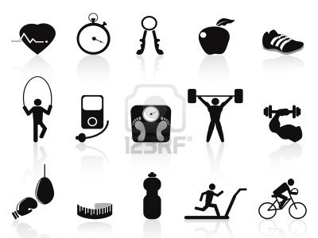
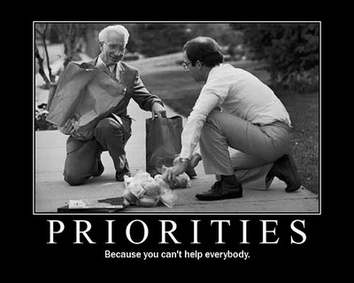

Websites
Contents
- Name Gender
- What's Wrong With Kaggle
- Data Driven AI Projects
- Collaborative Machine Learning
- Personal Plan Setting And Budgeting System
- Fitness Goal Setting And Tracking System
- Business Directories
- Scientist Ranker
- Prioritizer
- Face Gender
- Reddit Analyzer
- Hacker News Analyzer
- Movie Analyzer
- Face Analyzer
- Recipe Ethnicity
- Writing Authorship Similarity
- People Similarity
- ConversionOptimization
- Family Face
- Collaborative Image Labeling
- Crowd Funded Gym
- Crowd Funded School
- CrowdSourcedQA
- CrowdSourcedWordProcessor
- Rate My Face/Body
- Sports Analytics
- SchedPool
- Clones
- Essay Scoring
- Hiring Racism
- Goal Writing
Name gender

Find out how masculine or feminine your name is!
umar = first_u last_r letter_u letter_m letter_a letter_r length_4
What's Wrong With Kaggle?

- Need more people paid.
- Need transparent pricing.
- Need more competitions.
- Need to keep data private though for some commercial customers.
- Can also have crowdsourcing of data through platform.

Data Driven AI Projects
- Allen Institute AI Challenge
- imageNet
- Visual Turing Test
Collaborative Machine Learning
Feature Engineering Collaboration Platform
Personal Plan Setting And Budgeting System

Fitness Goal Setting And Tracking System
Business Directories

- Start with Hamilton.
- Base directory around seeking things for typical people.
- You're a student. You're a parent. You're a senior.
- Find a place to live
- Find a place to eat
- Find a place to buy groceries
- Find a place to eat overnight.
- Find a place to study.
- Find a place to get qualifications.
- Get your heating fixed.
- Get your roof fixed.
- Remodel your kitchen.
Scientist Ranker
Rank the world's scientists by order of impact
Add Candidate
Remove Candidate
Who is more important?
| John Wick | Jamais Casco |
| Inventing cure for cancer | Inventing electric airplane |
Ranking
| Name | Affiliation | Time On Site |
| joe Doe | Harvard | 3 days |
| Jane Doe | Yale | 1 year |
| John Smith | Stanford | 1 month |
| Jane Smith | MIT | 3 weeks |
| Jim Doe | Oxford | 2 years |
| Liz Doe | Cambridge | 22 days |
| Rob Smith | Tokyo | 8 months |
| Liz Smith | Beijing | 3 months |
Prioritizer
| Item | Rank | ||
| Item | Rank | ||
| Item | Rank | ||
| Item | Rank | ||
| Item | Rank | ||
| Item | Rank | ||
| Item | Rank | ||
| Item | Rank | ||
| Item | Rank | ||
| Item | Rank |
Face Gender
Find out how masculine or feminine your face is!
Reddit Analyzer

- Predict score from comment
- Predict date from comment
- Predict score from submission title
- Predict score from submission text
- Predict date from submission title
- Predict date from submission text
- Predict number of comments from submission title
- Predict subreddit from submission title
- Predict subreddit from comment
- Predict subreddit from submission text
Hacker News Analyzer

- Predict score from text
- Predict date from text
- Predict score ffrom title
- Predict date from title
Movie Analyzer
- Predict rating from data
- Predict vote count from data
- Predict revenue from by creating model from votes and rating to revenue data gathered from other source
Face Analyzer

- Predict attractiveness from face image
- Predict gender from face image
- Predict ethnicity from face image
- Predict country from face image
- Predict most similar celebrity face from image
- Predict relatedness of faces from images
Recipe Ethnicity
Predict ethnicity from recipe ingredients.
Writing Authorship Similarity

Predict most similar author to your writing.
People Similarity

Find most similar people from social media, webpages, dating profiles for purposes of finding dating partners or friends, collaborators etc.
Conversion Optimization

Predict which of several emails, webpages, sales pages, resumes will convert best
Family Face

App where users input faces of their family and draw facial keypoints and then how related and in which manner the faces of the family members are is calculated
Collaborative Image Labeling

App where users label regions on images, and the data is compiled to allow for creation of factory inspection systems, and other applications such as home robotics, and surveillance.
Crowd Funded Gym

Gym crowdfunded and run through a website
Crowd Funded School

School crowdfunded and run through website
Crowd Sourced QA
 Crowdsourcing QA for apps on mechanical turk - rainforest mturk
Crowdsourcing QA for apps on mechanical turk - rainforest mturkCrowd Sourced Word Processor

Soylent word processor - collaborative writing and other creative works, michael bernstein
Rate My Face/Body
Pay to have your face/body rated against 1000 other images, including of famous people.
Sports Analytics
Web based sports analytics for teams. Start with web GUI that allows annotation of video for data collection. Gradually add machine learning for automated decision making. StatDNA purchased by Arsenal. Uses poor workers in Cambodia and Laos to do the detailed video analysis. http://www.theguardian.com/football/2014/oct/17/arsenal-place-trust-arsene-wenger-army-statdna-data-analysts
SchedPool
Prescheduled Uber
 People specify GPS from/to coordinates, date, max price. Also specify flexibility in
terms of minutes before,location radius,max/min number of people to share with.
People specify GPS from/to coordinates, date, max price. Also specify flexibility in
terms of minutes before,location radius,max/min number of people to share with.
A driver also spacifies above and how much they want to be payed, a minimum.
The system continually calculates the matches, and if conditions are met by parties, they are emailed that there is a match.
Also, user also have profile on the system, including picture and video and other details, and ratings from previous customers of system.
System takes a cut of money pages between users.
System can thus preschedule for even year in advance, or work for even few minutes in advance.
Build and run on appengine. Call it schedpool.com, combination of scheduling and carpooling.
See if similar system can be built for food delivery, and other products, in time and space. Efficient matching of supply and demand.
Schedpool For Labor

Have schedpool like matching system for all kinds of human services, such as handyman stuff, basement refinishing, medical services, law services, tutoring, security guard, personal trainer etc.
Build Clones Of Popular Websites Such As Instacart, Rocketspoon, And Offer As Platforms For Entrepreneurs.
Examples - private search engines based on lucene competing with Google. Essentially enterprise versions of consumer sites. Entrepreneurs can run the business and outsource software to developer of platform.
Essay Scoring

Hiring Racism
Create app that allows people send resumes with different names on to companies and gather and publish the resultsGoal Writing

https://www.reddit.com/r/getdisciplined/comments/3getmv/question_why_should_i_write_my_goals_down_is/
Planning is an executive function that requires you to form complex ideas. Your attention span limits your ability to do this in your head -- you need written language to conceptualize complicated, nuanced ideas. Planning in writing also allows you to quickly recall your plans and store them unaltered in a way your brain just cannot do.
so in practice, we should write our goal everyday?
Some people have certainly gotten a lot out of that (but like everything, there is no 'best answer', just what you find works). Generally writing out difficult thoughts helps a lot with processing them. Helps concretize your thoughts and extend your memory onto paper.
I write my goals down on flashcards and review them morning and night. Helps to keep me focused on the end goal, it's too easy to get caught up in the minutiae of day to day living.
Yep. I use a white board to write short and long term goals. I written out others in notes on my phone, took a screenshot and made it my password window. It keeps me focused and helps greatly since I tend to lose focus quite quickly if it is not written down.
I suffer from a certain amount of executive dysfunction, particularly in the area of working memory, so that would go some way to explaining why I find planning so bloody difficult.
Might be linked to motor memory and the processing of information.
Handwriting something associates it to a neural pathway in your brain, hardwiring it. Also the time it takes to write something down causes you to mentally linger over it rather than having the fleeting thought run through your mind.
SMART goal setting is a very specific system that might help you. olympic.org is a good start.
I think it helps because it is really easy to deceive yourself and justify getting lazy or doing something irrelevant, so if you have it written down it works as a structure plus a static reminder about what you need to accomplish: for eg I have realized that even if I am disciplined I change my goals for a day a lot leading to time lost on decisions and such.
For me at least it helps get the thoughts in order... Inside your head sometimes there's just too much going in and out on a daily basis that you can get distracted or maybe lose your track of thoughts. That's for me. And I feel that it helps, now if there's any scientific evidence, I don't know
There is some scientific evidence to back it up.
From Forbes: 'There was a fascinating study conducted on the 1979 Harvard MBA program where graduate students were asked 'have you set clear, written goals for your future and made plans to accomplish them?' The result, only 3% had written goals and plans, 13% had goals but they weren’t in writing and 84% had no goals at all. Ten years later, the same group was interviewed again and the result was absolutely mind-blowing.
The 13% of the class who had goals, but did not write them down was earning twice the amount of the 84% who had no goals. The 3% who had written goals were earning, on average, ten times as much as the other 97% of the class combined!' http://www.forbes.com/sites/85broads/2014/04/08/ why-you-should-be-writing-down-your-goals/
Apparently that study never happened and it's a myth. There was a similar, real study done by Dominican University: https://rapidbi.com/ harvard-yale-written-goals-study-fact-or-fiction/#.VciTxBNViko
Im the type to think of all of my plans for the next day, but forget the smaller details of my plan. When you write a list it becomes an accountability. The list is there as proof of commitment.
The feeling when you confidently cross out something on the list (especially when you do so proactively) is extremely rewarding. Likewise, the feeling of going to sleep seeing uncrossed goals on your list is a feeling you will hate, and should drive you to avoid that emptiness the next day
It seems to me that writing down your goals is more or less a long term 'to do' list. And I have read studies showing that those are effective.
I've done some research on self-regulation behaviour change techniques for my PhD. I haven't yet read any papers on the effectiveness of writing down goals, but as other posters have said, having an action plan for achieving your goal is something that seems helpful.
When it comes to action plans, one of the most effective kind is called an implementation intention. This page has a good layman's explanation of what an implementation intention is (as well as links to studies that have evaluated it). Essentially an implementation intention is an If/Then plan for the behaviour you're looking to change. For example, people looking to reduce their consumption of alcohol might decide: : IF I’ve had two drinks and I’m offered another, THEN I’ll say “Thank you, I’ll just have an orange juice”.
Action plans seem to work because having a concrete plan for when in a specific situation means the plan can be performed automatically and without conscious effort. As a result you don’t have to rely on willpower, something which can fluctuate and which, therefore, can't always be relied upon.
had to watch this in first year psych and do a goal setting worksheet
if you look up 'implementation intentions' there's a few studies where they've shown setting detailed goals leads to higher rates of follow through for example the difference between saying 'i'm going to check my breasts every month for lumps' and writing down 'on the first tuesday of every month at 8am before i shower i will check my breasts for lumps' - the people who do the latter are much more likely to actually do what they've said
It's like setting a date for a follow up doctor's appointment, rather than saying 'I'll see you in three months'.
Consider the implementation of habits as a means to achieve your goals. There is a lot of research on how to form habits, with a good source being the book called The Power of Habit, as it covers with lot of the research. Habits are very well understood as conditioning
I like the idea of goals, but I don't think they work well on their own. A lot of older self help material focuses on goals and action plans, and it is too easy to just lose traction. A lot of the newer material is still big on goals, but more as a means of creating habits.
Goals are still important as they are a destination you want to reach. It is unlikely that you'll end up where you want by just driving around. But keep in mind that even if you have a goal, you still have to drive there, and the method you choose to ensure you act on that goal over time is what is important.
Currently I have a goal to save $5000 by February. The habit I am cultivating involves setting aside a specific amount of money every paycheck. I want to make saving that money as automatic as possible, I don't want to have to use any will power.
Writing a goal down is not needed, but most people have terrible memories and will be really hazy about what they need to do to achieve it. Sure, you can do a complex math problem in your head, but it helps a lot to write it down and to show your work. Worse, when it is in your head, you'll have to solve the same problem again and again which discourages you from thinking about it as the mind avoids effort.
Not so much a science, but just a really great method for task management. I recommend the book 'Getting Things Done' by David Allen. There is plenty of software out there that uses his method. I use Omnifocus and it is absolutely game changing for my productivity.
The Writing Assignment That Changes Lives
http://www.npr.org/sections/ed/2015/07/10/419202925/ the-writing-assignment-that-changes-lives
I think the writing of goals is probably more of a memory thing. If I've only thought the goal, then I have to actively remember it. If I write it down, however, I can be reminded of it instead, which frees up headspace for pursuing the goal.
Look at what the invention of writing did for humanity. Imagine what it can do for you.
The Writing Assignment That Changes Lives
July 10, 2015 8:03 AM ET
Anya Kamenetz
Why do you do what you do? What is the engine that keeps you up late at night or gets you going in the morning? Where is your happy place? What stands between you and your ultimate dream?
Heavy questions. One researcher believes that writing down the answers can be decisive for students.
He co-authored a paper that demonstrates a startling effect: nearly erasing the gender and ethnic minority achievement gap for 700 students over the course of two years with a short written exercise in setting goals.
Jordan Peterson teaches in the department of psychology at the University of Toronto. For decades, he has been fascinated by the effects of writing on organizing thoughts and emotions.
Experiments going back to the 1980s have shown that 'therapeutic' or 'expressive' writing can reduce depression, increase productivity and even cut down on visits to the doctor.
'The act of writing is more powerful than people think,' Peterson says.
Most people grapple at some time or another with free-floating anxiety that saps energy and increases stress. Through written reflection, you may realize that a certain unpleasant feeling ties back to, say, a difficult interaction with your mother. That type of insight, research has shown, can help locate, ground and ultimately resolve the emotion and the associated stress.
At the same time, 'goal-setting theory' holds that writing down concrete, specific goals and strategies can help people overcome obstacles and achieve.
'It Turned My Life Around'
Recently, researchers have been getting more and more interested in the role that mental motivation plays in academic achievement — sometimes conceptualized as 'grit' or 'growth mindset' or 'executive functioning.'
Peterson wondered whether writing could be shown to affect student motivation. He created an undergraduate course called Maps of Meaning. In it, students complete a set of writing exercises that combine expressive writing with goal-setting.
Students reflect on important moments in their past, identify key personal motivations and create plans for the future, including specific goals and strategies to overcome obstacles. Peterson calls the two parts 'past authoring' and 'future authoring.'
'It completely turned my life around,' says Christine Brophy, who, as an undergraduate several years ago, was battling drug abuse and health problems and was on the verge of dropping out. After taking Peterson's course at the University of Toronto, she changed her major. Today she is a doctoral student and one of Peterson's main research assistants.
In an early study at McGill University in Montreal, the course showed a powerful positive effect with at-risk students, reducing the dropout rate and increasing academic achievement.
Peterson is seeking a larger audience for what he has dubbed 'self-authoring.' He started a for-profit company and is selling a version of the curriculum online. Brophy and Peterson have found a receptive audience in the Netherlands.
At the Rotterdam School of Management, a shortened version of self-authoring has been mandatory for all first-year students since 2011. (These are undergraduates — they choose majors early in Europe).
The latest paper, published in June, compares the performance of the first complete class of freshmen to use self-authoring with that of the three previous classes.
Overall, the 'self-authoring' students greatly improved the number of credits earned and their likelihood of staying in school. And after two years, ethnic and gender-group differences in performance among the students had all but disappeared.
The ethnic minorities in question made up about one-fifth of the students. They are first- and second-generation immigrants from non-Western backgrounds — Africa, Asia and the Middle East.
While the history and legacy of racial oppression are different from that in the United States, the Netherlands still struggles with large differences in wealth and educational attainment among majority and minority groups.
'Zeroes Are Deadly'
At the Rotterdam school, minorities generally underperformed the majority by more than a third, earning on average eight fewer credits their first year and four fewer credits their second year. But for minority students who had done this set of writing exercises, that gap dropped to five credits the first year and to just one-fourth of one credit in the second year.
How could a bunch of essays possibly have this effect on academic performance? Is this replicable?
Melinda Karp is the assistant director for staff and institutional development at the Community College Research Center at Teachers College, Columbia University. She leads studies on interventions that can improve college completion. She calls Peterson's paper 'intriguing.' But, she adds, 'I don't believe there are silver bullets for any of this in higher ed.'
Peterson believes that formal goal-setting can especially help minority students overcome what's often called 'stereotype threat,' or, in other words, to reject the damaging belief that generalizations about ethnic-group academic performance will apply to them personally.
Karp agrees. 'When you enter a new social role, such as entering college as a student, the expectations aren't always clear.' There's a greater risk for students who may be academically underprepared or who lack role models. 'Students need help not just setting vague goals but figuring out a plan to reach them.'
The key for this intervention came at crunch time, says Peterson. 'We increased the probability that students would actually take their exams and hand in their assignments.' The act of goal-setting helped them overcome obstacles when the stakes were highest. 'You don't have to be a genius to get through school; you don't even have to be that interested. But zeroes are deadly.'
Karp has a theory for how this might be working. She says you often see at-risk students engage in self-defeating behavior 'to save face.'
'If you aren't sure you belong in college, and you don't hand in that paper,' she explains, 'you can say to yourself, 'That's because I didn't do the work, not because I don't belong here.' '
Writing down their internal motivations and connecting daily efforts to blue-sky goals may have helped these young people solidify their identities as students.
Brophy is testing versions of the self-authoring curriculum at two high schools in Rotterdam, and monitoring their psychological well-being, school attendance and tendency to procrastinate.
Early results are promising, she says: 'It helps students understand what they really want to do.'